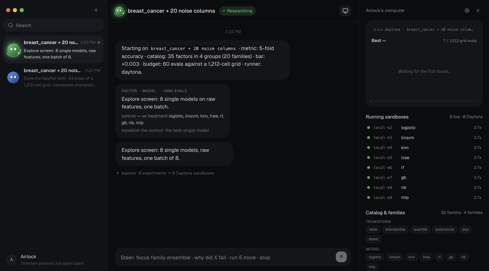
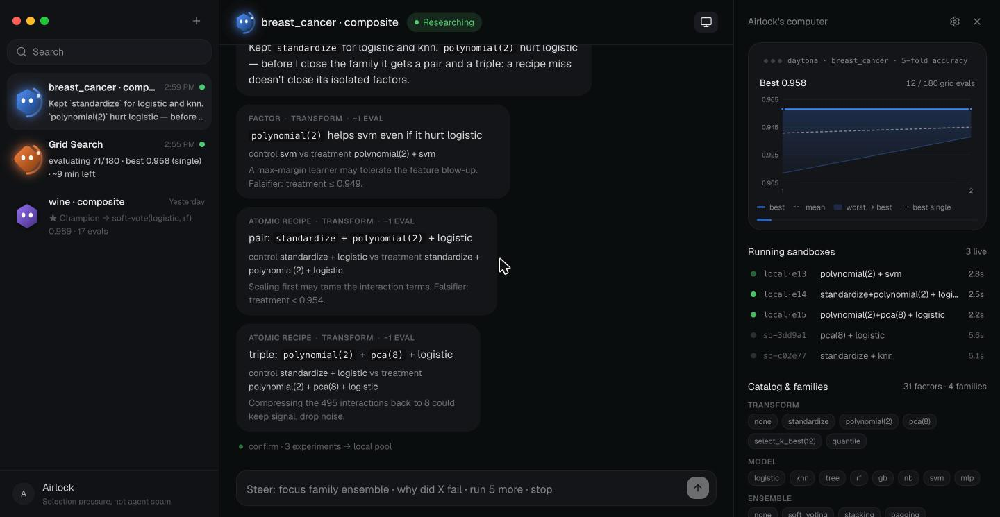
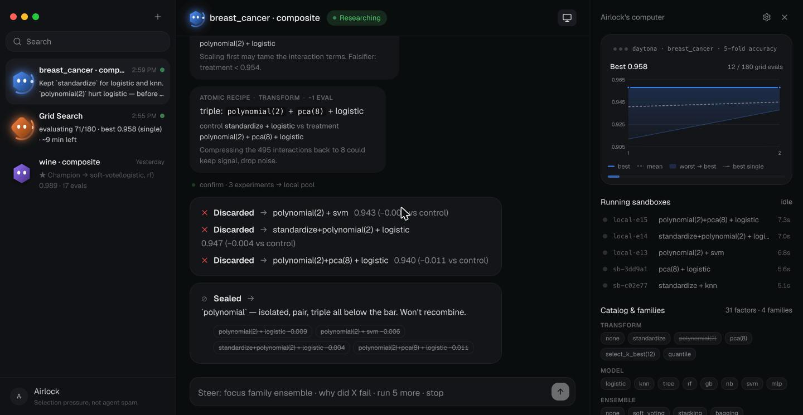
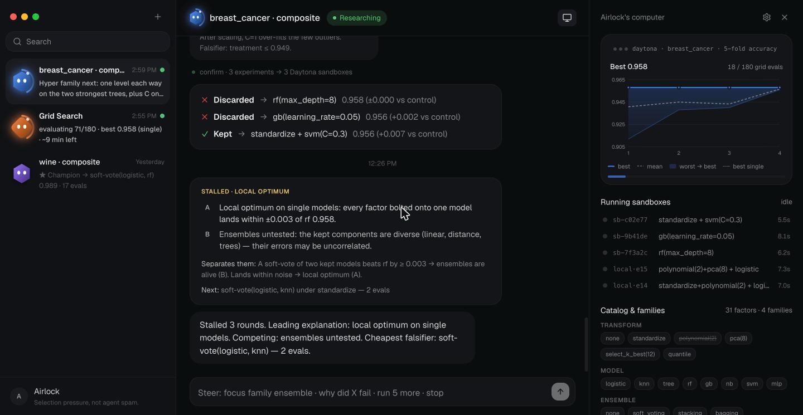
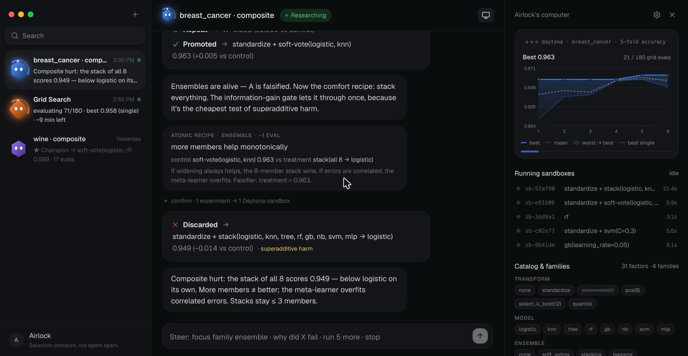
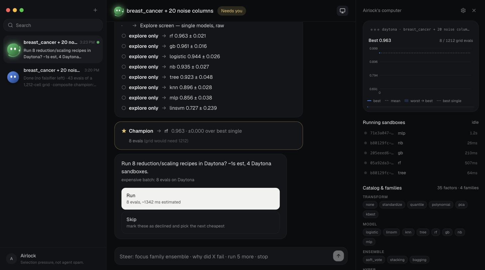
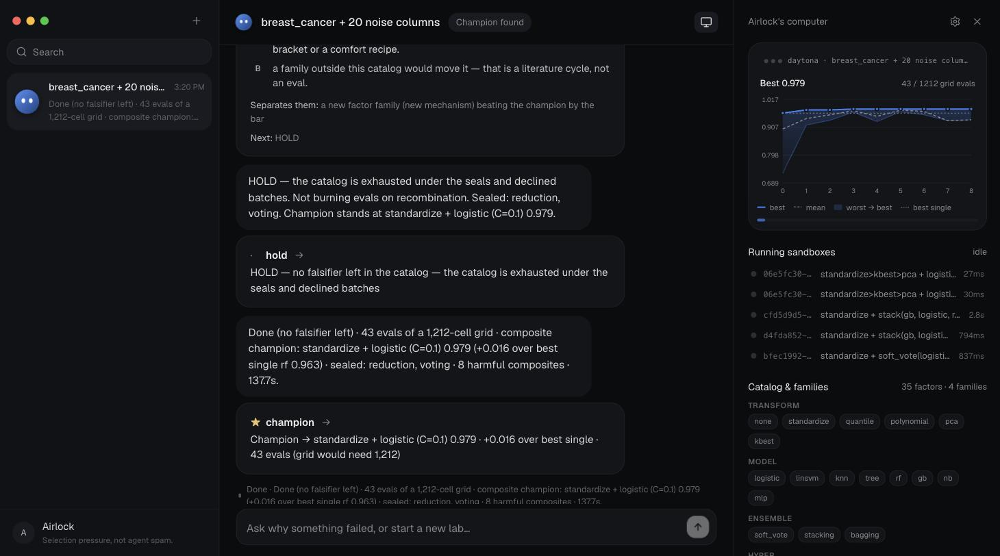

Daytona HackSprint Seoul · 2026
Airlock
ML 모델 구조를 자동으로 실험하고, 무엇을 남기고 무엇을 버릴지 규칙에 따라 고르는 리서치 에이전트.
An auto-research agent that runs ML structure experiments and decides, by rule, what to keep and what to drop.
Daytona 샌드박스에서 실행 · Nosana 오픈 모델로 설명 · DNSimple로 게시
Why Airlock?
Why Daytona?
배경 / 01
개발 방식이 '스펙 드리븐'에서 '아웃풋 드리븐'으로 바뀌고 있습니다.
Development is moving from spec-driven to output-driven: generate many results first, then choose.
먼저 명세를 쓰고, 그대로 한 번 만든다.
결과가 나쁘면 명세부터 다시 씁니다. 만드는 비용이 비쌌기 때문에 한 번에 맞히려고 했습니다.
먼저 결과물을 여러 개 만들고, 그중에서 고른다.
생성 비용이 싸졌기 때문에 가능해진 방식입니다. 그래서 지금의 추세는 에이전트를 병렬로 많이 돌려 결과물을 빨리 만들고, 그중 하나를 고르는 것입니다. 예: Cursor 2.0은 한 작업에 에이전트를 최대 8개 병렬로 실행합니다.
배경 / 02
하지만 결과물이 많아질수록, 고르는 사람이 힘들어집니다.
More outputs do not mean a better choice. Past a point, the person choosing gets worse, not better.
배경 / 03
에이전트가 많을수록 무조건 좋은가? 아닙니다. 적정선이 있습니다.
Is more agents always better? No — there is a right amount, and it depends on the task.
"More Agents Is All You Need"
같은 LLM을 여러 개 띄워 답을 모아 투표만 해도, 에이전트 수가 늘수록 정확도가 올라갑니다. — Li et al., 2024
"Why Do Multi-Agent LLM Systems Fail?"
실제 멀티에이전트 프레임워크의 실패를 14가지 유형으로 분류했습니다. 큰 축 하나가 에이전트 간 불일치 — 서로 합의를 못 합니다. 많아지면 노이즈가 되고, 합의점을 찾기 어려워집니다. — Cemri et al., 2025
배경 / 04
이 방향의 대표가 Google DeepMind의 AlphaEvolve입니다 (2025년 5월).
AlphaEvolve: an LLM proposes candidates, an evaluator scores them, only the best survive to the next generation. It needs large-scale execution infrastructure — which is exactly what Daytona provides.
대규모 실행·평가 인프라
후보 수천 개를 실제로 실행해야 하므로 대규모 컴퓨팅이 있어야만 쓸 수 있었습니다. 일반 공개 서비스가 아니라 제한된 접근입니다.
실험 하나 = 샌드박스 하나
Airlock은 후보마다 Daytona 샌드박스를 만들어 실행하고 지웁니다. SDK 호출 몇 줄이면 됩니다. 대규모 클러스터 없이 같은 구조의 진화적 탐색을 돌릴 수 있습니다.
제품 / 05
ML 구조의 조합을 자동으로 실험하고, 규칙에 따라 다음 실험을 고릅니다.
한 번에 한 요인만 바꿔서 대조군과 비교합니다. 효과가 없다고 증명된 계열은 더 실험하지 않습니다. 비싼 실험 전에만 사람에게 묻습니다.
One factor changed per experiment, against a control. Families proven useless are sealed. A person is asked only before an expensive batch.
none · standardize · quantile · polynomial · pca · kbest
logistic · linsvm · knn · tree · rf · gb · nb · mlp
soft_vote · stacking · bagging (모델들을 묶음)
C · max_depth · n_neighbors · n_estimators · learning_rate 등 18개
규칙에 맞는 조합만 세면 1,212개 · 데이터 breast_cancer(+노이즈 20열) · 지표 5-fold 정확도
차이 / 06
AlphaEvolve와 가장 큰 차이는 "무엇을 버리느냐"입니다.
가설 A가 실험에서 성적이 나빴습니다. A를 버려야 할까요? 대부분의 오토리서치와 AlphaEvolve는 버립니다(점수 낮은 후보 탈락). ML에서는 이게 틀린 경우가 많습니다. A 혼자는 나빠도, A + B는 좋을 수 있습니다. 아래는 실제 실행 기록입니다(숫자는 5-fold 교차검증 정확도).
Should a hypothesis that scored badly be dropped? Most auto-research (and AlphaEvolve) drops it. In ML that is often wrong: A alone can be bad while A + B is the best. Real ledger below.
비교 / 07
1,212개 구조 중에서 고르는 방법은 세 가지입니다.
Three ways to search 1,212 structures: run all of them, hand 100 agent outputs to a human, or choose which experiments to run.
전부 실행
모든 조합을 다 돌립니다. 정확하지만, 후보가 늘어나면 비용을 감당할 수 없습니다.
사람이 고름
에이전트 100개가 결과 100개를 냅니다. 순위도 근거도 없어서, 결국 사람이 다시 판단해야 합니다.
실험을 골라서 실행
후보마다 점수를 실제로 재고, 효과 없는 계열은 더 돌리지 않고, 사람에게는 비용을 알려주며 두 번 물었습니다. 결과 0.979 — 최고 단일 모델보다 +0.016.
Daytona / 08
실험 하나마다 Daytona 샌드박스 하나를 씁니다.
아래는 실제 실행 화면입니다. 첫 라운드의 실험 8개가 샌드박스 8개에서 동시에 시작됐습니다.
Real capture: the first round's 8 experiments start at once, in 8 Daytona sandboxes.

- 병렬 실행라운드의 실험들이 동시에 시작됩니다. 실험 8개가 1개 걸리는 시간에 끝납니다.
- 공식 SDKDaytona Python SDK로 create → upload → exec → delete. 실험이 끝나면 샌드박스는 삭제됩니다.
- 화면에서 확인오른쪽 패널에 샌드박스 ID와 실행 시간이 표시됩니다. 결과마다 어떤 샌드박스에서 실행됐는지 기록됩니다.
규칙 / 09
무엇을 버릴지도 규칙으로 정합니다.
요인 하나를 버리려면 그 요인 단독 실험이 실패해야 합니다. 조합이 실패했다는 이유로는 버리지 않습니다.
A factor is dropped only when it fails on its own. A failed combination never drops the factors inside it.

조합(레시피)이 실패해도, 그 안에 들어간 요인 단독은 버리지 않습니다.

계열은 단독 실험, 2개 조합, 3개 조합이 모두 기준 미달일 때만 봉인합니다. 봉인된 계열은 다시 실험하지 않습니다.
정체 / 10
3라운드 동안 개선이 없으면, 원인 후보 두 개를 세우고 둘을 가르는 실험을 고릅니다.
가장 그럴듯한 아이디어가 아니라, 두 설명 중 하나를 틀렸다고 판정할 수 있는 실험 중 가장 싼 것을 먼저 실행합니다.
After 3 rounds without improvement: two candidate causes, then the cheapest experiment that rules one of them out.

조합 손해 / 11
좋은 요소 둘을 합치면 나빠질 수 있습니다. 그것도 측정해서 기록합니다.
앙상블 점수가 구성 모델 하나의 점수보다 낮으면 "조합 손해"로 기록하고, 그 조합은 다시 실행하지 않습니다.
If an ensemble scores below one of its own members, that combination is recorded as harmful and never run again.

- 결과의 한 종류1 + 1 < 2는 오류가 아니라 판정 결과입니다. 어떤 조합이 왜 나빴는지 이름과 이유가 남습니다.
- 실제 실행에서실험 43회 중 8개 조합이 손해로 판정됐습니다. 조합만 닫히고, 그 안의 요인은 열려 있습니다.
- 다시 실행하지 않음손해 기록에는 구성 모델 각각의 점수가 함께 남습니다. 다음 라운드가 같은 조합을 다시 시도하지 않습니다.
사람의 결정 / 12
비싼 실험 전에만 사람에게 묻습니다. 비용과 기본값을 함께 보여줍니다.
아래는 실제 실행 화면입니다. 사람이 답하지 않으면 정해진 기본값으로 진행하고, 그 사실을 채팅에 남깁니다.
Real capture. The agent asks only before an expensive batch, with the cost and the default it will take if nobody answers.

- 질문"reduction / scaling 레시피 8개를 Daytona에서 실행할까요?"
- 비용실험 8회 · Daytona 샌드박스 4개 — 답하기 전에 먼저 계산해서 보여줍니다.
- 기본값답이 없으면 기본값(실행)으로 진행하고, 채팅에 그렇게 했다고 기록합니다.
- 답클릭 한 번: 실행 또는 건너뛰기. 건너뛴 실험은 "거절"로 기록되고, "실패"로 기록되지 않습니다.
결과 / 13
결과: standardize + logistic (C=0.1) · 0.979
점수는 5-fold 교차검증으로 측정한 값입니다. 모델이 매긴 점수가 아닙니다.
The score is measured 5-fold cross-validation accuracy — never a model's opinion.

사용한 스폰서 제품
Daytona · Nosana · DNSimple 위에서 동작합니다.
모든 실험은 Daytona 샌드박스에서 실행됩니다. 공식 SDK로 생성·업로드·실행·삭제를 병렬로 처리합니다.
Nosana에 배포한 오픈 모델(OpenAI 호환 /v1)이 실험 기록을 근거로 "왜 실패했나"에 답하고 마무리 요약을 씁니다. 점수는 매기지 않습니다.
끝난 실험의 리포트를 서브도메인에 게시합니다. 토큰을 설정하면 동작하는 선택 단계입니다.
github.com/yc9954/airlock실험을 골라서 합니다.